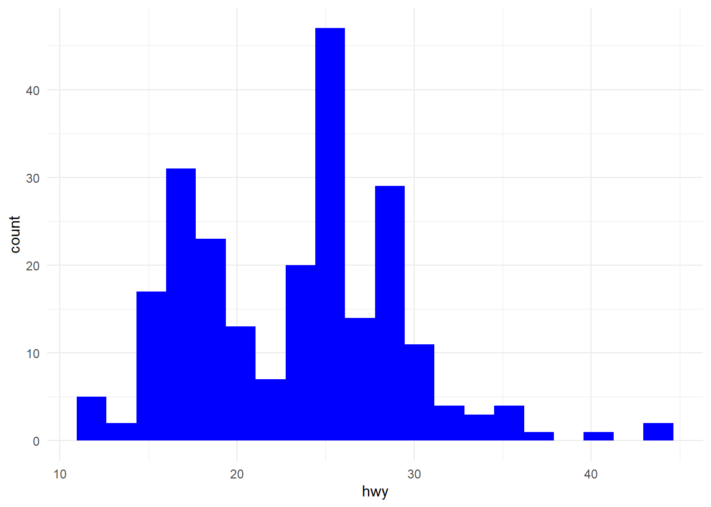

Veri ön işleme; istatistiksel modeller kurulmadan önce veri seti üzerinde yapılan bir takım düzeltme, eksik veriyi tamamlama, tekrarlanan verileri kaldırma, dönüştürme, bütünleştirme, temizleme, normalleştirme, boyut indirgeme vb. işlemlerdir. Bu aşamada ister istemez veri üzerinde bilgi keşfi yapılmış olur. Veri önişleme istatistiksel bir modelleme sürecinin büyük kısmını oluşturmaktadır. Kesin bir rakam olmamakla birlikte modelleme sürecinin yarısından fazlasının bu aşamada harcandığını ifade edebiliriz. Veri ön işleme temel anlamda 4 aşamadan oluşmaktadır. Bunlar sırasıyla şu şekildedir:
Veri Temizleme : Eksik verilerin tamamlanması, aykırı değerlerin teşhis edilmesi ve verilerdeki tutarsızlıkların giderilmesi gibi işlemler yapılmaktadır.
Veri Birleştirme: Farklı farklı veri tabanlarında bulunan veri setlerinin tek bir yerde toplanması aşamasının düzenli bir şekilde yürütülmesi sağlanır.
Veri Dönüştürme : Bu aşamada veriler, modelleme için uygun formlara dönüştürülürler. Veri dönüştürme; düzeltme, birleştirme, genelleştirme ve normalleştirme gibi değişik işlemlerden biri veya bir kaçını içerebilir. Veri normalleştirme , min-max dönüşümü, z standartlaştırması gibi yöntemler en sık kullanılan veri dönüştürme işlemlerinden bazılarıdır.
Veri İndirgeme : Daha küçük hacimli olarak veri kümesinin indirgenmiş bir örneğinin elde edilmesi amacıyla uygulanır. Bu sayede elde edilen indirgenmiş veri kümesine modelleme teknikleri uygulanarak daha etkin sonuçlar elde edilebilir. Veri Birleştirme (Data Aggregation), Boyut indirgeme (Dimension Reduction), Veri Sıkıştırma (Data Compression), Kesikli hale getirme (Discretization), Özellik Seçimi (Feature Selection) sık kullanılan veri indirgeme işlemlerindendir.
Bu dokümanda eksik veriler (missing values), aykırı değerler (outliers) ve veri normalleştirme işlemleri R uygulamları ile anlatılacaktır.
Eksik Veriler
Eksik veriler (kayıp gözlem), veri toplamada kaçınılmaz bir durumdur ve üzerinde dikkatle durulmalıdır. Sistematik bir kayıp gözlem durumu yoksa ortada ciddi bir sorun yoktur. Ama rastgele olmayan bir hata varsa tüm kitleye dair yanlılık olacağı için bu durum göz ardı edilemez.
İmputasyon terimi, eksik verilerin yerine konulması veya doldurulması işlemine atıfta bulunur. Eksik veriler, bir veri setinde belirli gözlemler veya değişkenler için eksik veya bilinmeyen değerler içeren durumlardır. İstatistiksel analiz yaparken eksik verilerle başa çıkmak önemlidir çünkü eksik veriler, sonuçları yanıltabilir veya analizleri etkileyebilir.
İmputasyon, eksik verileri doldurmak veya tahmin etmek için kullanılan çeşitli istatistiksel yöntemleri ifade eder. İmputasyon işlemi, eksik verileri analizde kullanılabilir hale getirmek amacıyla yapılır. İmputasyon yöntemleri, veri setinin yapısına ve eksik verilerin nedenlerine bağlı olarak değişebilir. İşte bazı yaygın imputasyon yöntemleri:
Ortalama Değer İmputasyonu: Eksik veriler, değişkenin ortalama değeri ile doldurulabilir. Bu yöntem, eksik verilerin diğer gözlemlerdeki ortalama değerlere benzer olduğu varsayımına dayanır.
Medyan Değer İmputasyonu: Eksik veriler, değişkenin medyan değeri ile doldurulabilir. Medyan, verilerdeki aşırı değerlerden etkilenmeyeceği için ortalama değere göre daha dayanıklı bir seçenektir.
En Yakın Komşu İmputasyonu: Eksik veriler, benzer diğer gözlemlerin değerleri ile doldurulabilir. Bu yöntemde, eksik veriye sahip olan gözlem, diğer gözlemlerin benzerliklerine göre doldurulur.
Regresyon İmputasyonu: Eksik veri içeren bir değişken, diğer değişkenlerle ilişkilendirilerek tahmin edilebilir. Bu yöntem, eksik verinin diğer değişkenlerle ilişkisini kullanarak doldurur.
EM (Expectation-Maximization) Algoritması: EM algoritması, eksik veri problemini çözmek için kullanılan bir iteratif istatistiksel yöntemdir. Bu yöntem, eksik verilerin olasılık dağılımlarını tahmin etmek için kullanılır.
İmputasyon yöntemi, veri setinin özelliklerine, eksik verilerin miktarına ve verilerin doğasına bağlı olarak seçilir. Her yöntemin avantajları ve dezavantajları vardır, bu nedenle doğru yöntemi seçmek, analizin doğruluğunu ve güvenilirliğini etkileyebilir. İmputasyonun amacı, eksik verilerin doğru ve güvenilir bir şekilde doldurulmasıdır, böylece analiz sonuçları daha kesin ve anlamlı olur.
# eksik verilere basit değer atamadf2$weight2 <-ifelse(is.na(df2$weight),mean(df2$weight, na.rm =TRUE),df2$weight)df2
# KNN (k-nearest neighbor) ile Değer Atamalibrary(DMwR2)# airquality verisidf_air <- tibble::as_tibble(airquality)anyNA(df_air)
[1] TRUE
# airquality verisindeki Wind değişkeninin bazı değerlerini NA yapalımset.seed(1234)row_num <-sample(1:nrow(airquality),5)row_num # bu satırdaki değerlere NA atanacak
# k parametresi, verilen bir noktaya en yakın komşuların sayısıdır. # Örneğin: k=5 olsun. Bu durumda mesafeye (öklit) göre en yakın 5 komşu belirlenir# ve mesafenin ağırlıklı ortalaması hesaplanır.# ağırlıklandırma, her komşuya 1 / d ağırlığının verilmesini içerir.# burada d komşuya olan uzaklıktır.knn_df_air <-knnImputation(airquality_2, k =5) # k komşu sayısıresult <-data.frame(row=row_num,orig=airquality[row_num,"Wind"],knn=knn_df_air[row_num,"Wind"])result
Eksik verilerin analiz edilmesi ve imputasyon konusunda R içerisinde çeşitli kütühaneler bulunmaktadır. Bunlardan en çok bilinenleri mice, VIM, missForest, imputation, mi, Amelia ve Hmisc paketleridir.
Aykırı Değer Analizi
Aykırı değer, diğer gözlemlerden uzak olan, yani diğer veri noktalarından önemli ölçüde farklı olan bir veri noktası olan bir değer veya gözlemdir. Bu dokümanda, tanımlayıcı istatistikler (minimum, maksimum, histogram, kutu grafiği ve yüzdelikler dahil) gibi basit teknikler ve Z-Skoru ile aykırı değer analizi anlatılacaktır.
Minumum ve Maximum
library(ggplot2)# mpg verisindeki hwy değişkeni üzerinden inceleyelimsummary(mpg$hwy)
Min. 1st Qu. Median Mean 3rd Qu. Max.
12.00 18.00 24.00 23.44 27.00 44.00
min(mpg$hwy)
[1] 12
max(mpg$hwy)
[1] 44
Histogram
ggplot(mpg) +aes(x = hwy) +geom_histogram(bins =20, fill ="blue") +theme_minimal()

# grafiğiin sağ tarafında kalan gözlemler şüpheli görünüyor.
Boxplot
Boxplot, beş konum ölçüsü kullanarak verilerin grafiksel bir sunumunu verir: en küçük değer (min), birinci çeyreklik (\(Q_1\)) , medyan, üçüncü çeyreklik (\(Q_3\)) en büyük değer. Kutunun farklı bölümleri arasındaki boşluk, verilerdeki dağılım (yayılma) ve çarpıklık derecesini gösterir. Bir boxplot grafiği, çeyrekler arası aralık (IQR) kriteri kullanılarak şüpheli bir aykırı değer olarak sınıflandırılan herhangi bir gözlemi görüntüleyerek nicel bir değişkeni görselleştirmeye yardımcı olur.
\(I = [Q_1-1.5 * IQR ; Q_3 + 1.5 * IQR]\)
IQR ise üçüncü ve birinci çeyrek arasındaki farktır. R içerisindeki IQR() fonksiyonu bu amaçla kullanılabilir.
# temel istatistiklere erişimsummary(mpg$hwy)
Min. 1st Qu. Median Mean 3rd Qu. Max.
12.00 18.00 24.00 23.44 27.00 44.00
fivenum(mpg$hwy)
[1] 12 18 24 27 44
ggplot(mpg) +aes(x ="", y = hwy) +geom_boxplot(fill ="blue") +theme_minimal()
# outier olarak görülen değerlerin konumlarıhwy_out <-boxplot.stats(mpg$hwy)$outhwy_out_sira <-which(mpg$hwy %in%c(hwy_out))hwy_out_sira
[1] 213 222 223
# outlier olarak görülen satırlarmpg[hwy_out_sira, ]
# A tibble: 3 × 11
manufacturer model displ year cyl trans drv cty hwy fl class
<chr> <chr> <dbl> <int> <int> <chr> <chr> <int> <int> <chr> <chr>
1 volkswagen jetta 1.9 1999 4 manua… f 33 44 d comp…
2 volkswagen new beetle 1.9 1999 4 manua… f 35 44 d subc…
3 volkswagen new beetle 1.9 1999 4 auto(… f 29 41 d subc…
Yüzdelikler (Percentiles)
Bu aykırı değer tespiti yöntemi, yüzdelik dilimlere dayalıdır. Yüzdelikler yöntemiyle, 2,5 ve 97,5 yüzdelik dilimlerin oluşturduğu aralığın dışında kalan tüm gözlemler potansiyel aykırı değerler olarak kabul edilecektir. Aralığı oluşturmak için 1 ve 99 veya 5 ve 95 yüzdelikler gibi diğer yüzdelikler de düşünülebilir.
alt_sinir <-quantile(mpg$hwy, 0.025)alt_sinir
2.5%
14
ust_sinir <-quantile(mpg$hwy, 0.975)ust_sinir
97.5%
35.175
# Bu yönteme göre, 14'ün altındaki ve 35.175'in üzerindeki tüm gözlemler,# potansiyel aykırı değerler olarak kabul edilecektir.outlier_sira <-which(mpg$hwy < alt_sinir | mpg$hwy > ust_sinir)outlier_sira
[1] 55 60 66 70 106 107 127 197 213 222 223
# Bu yönteme göre 11 adet outlier bulunmuştur.mpg[outlier_sira,]
# A tibble: 11 × 11
manufacturer model displ year cyl trans drv cty hwy fl class
<chr> <chr> <dbl> <int> <int> <chr> <chr> <int> <int> <chr> <chr>
1 dodge dakota pi… 4.7 2008 8 auto… 4 9 12 e pick…
2 dodge durango 4… 4.7 2008 8 auto… 4 9 12 e suv
3 dodge ram 1500 … 4.7 2008 8 auto… 4 9 12 e pick…
4 dodge ram 1500 … 4.7 2008 8 manu… 4 9 12 e pick…
5 honda civic 1.8 2008 4 auto… f 25 36 r subc…
6 honda civic 1.8 2008 4 auto… f 24 36 c subc…
7 jeep grand che… 4.7 2008 8 auto… 4 9 12 e suv
8 toyota corolla 1.8 2008 4 manu… f 28 37 r comp…
9 volkswagen jetta 1.9 1999 4 manu… f 33 44 d comp…
10 volkswagen new beetle 1.9 1999 4 manu… f 35 44 d subc…
11 volkswagen new beetle 1.9 1999 4 auto… f 29 41 d subc…
# Sınırları biraz daha küçültelimalt_sinir <-quantile(mpg$hwy, 0.01)ust_sinir <-quantile(mpg$hwy, 0.99)outlier_sira <-which(mpg$hwy < alt_sinir | mpg$hwy > ust_sinir)mpg[outlier_sira, ]
# A tibble: 3 × 11
manufacturer model displ year cyl trans drv cty hwy fl class
<chr> <chr> <dbl> <int> <int> <chr> <chr> <int> <int> <chr> <chr>
1 volkswagen jetta 1.9 1999 4 manua… f 33 44 d comp…
2 volkswagen new beetle 1.9 1999 4 manua… f 35 44 d subc…
3 volkswagen new beetle 1.9 1999 4 auto(… f 29 41 d subc…
# Buna göre IQR ile elde edildiği gibi 3 adet outlier bulundu.
Z-Skor Yöntemi
Aykırı değerlerin tespitinde ortalama ve standart sapmanın kulllanıldığı en bilinen yöntemlerdendir ve aşağıdaki şekilde hesaplanır.
# -3 ve +3 sapma dışında kalanları aykırı değer olarak kabul ediyoruz.outliers_zskor <-which(mpg$hwy_std <-3| mpg$hwy_std >+3)outliers_zskor
[1] 213 222
mpg[outliers_zskor,c() ]
# A tibble: 2 × 0
# bu yönteme göre 2 adet aykırı değer bulunmuştur.
Veri Normalleştirme
Değişkenler farklı ölçeklerde ölçüldüğünde, genellikle analize eşit katkıda bulunmazlar. Örneğin, bir değişkenin değerleri 0 ile 100.000 arasında ve başka bir değişkenin değerleri 0 ile 100 arasında değişiyorsa, daha büyük aralığa sahip değişkene analizde daha büyük bir ağırlık verilecektir. Değişkenleri normalleştirerek, her bir değişkenin analize eşit katkı sağladığından emin olabiliriz. Değişkenleri normalleştirmek için (veya ölçeklendirmek) genellikle min-max ya da z dönüşümü yöntemleri kullanılır.
# min-max dönüşümleri# 0 ile 1 arasi dönüşümstd_0_1 <-function(x) { (x -min(x)) / (max(x) -min(x))}#-1 ile +1 arası dönüşüm std_1_1 <-function(x) { ((x -mean(x)) /max(abs(x -mean(x))))}# a ile b arası dönüşüm std_min_max <-function(x,a,b) {# a min değer# b max değer (a + ((x -min(x)) * (b - a)) / (max(x) -min(x)))}set.seed(12345)dat <-data.frame(x =rnorm(20, 10, 3),y =rnorm(20, 30, 8),z =rnorm(20, 25, 5))dat
x y z
Min. : 4.546 Min. :16.70 Min. :13.10
1st Qu.: 8.914 1st Qu.:27.09 1st Qu.:21.16
Median :10.284 Median :34.41 Median :27.30
Mean :10.230 Mean :33.23 Mean :25.53
3rd Qu.:11.836 3rd Qu.:42.00 3rd Qu.:29.38
Max. :15.452 Max. :47.57 Max. :35.73
The following objects are masked from 'package:stats':
filter, lag
The following objects are masked from 'package:base':
intersect, setdiff, setequal, union
dat %>%mutate_all(std_0_1) %>%summary()
x y z
Min. :0.0000 Min. :0.0000 Min. :0.0000
1st Qu.:0.4005 1st Qu.:0.3365 1st Qu.:0.3562
Median :0.5261 Median :0.5737 Median :0.6275
Mean :0.5211 Mean :0.5354 Mean :0.5492
3rd Qu.:0.6684 3rd Qu.:0.8194 3rd Qu.:0.7194
Max. :1.0000 Max. :1.0000 Max. :1.0000
dat %>%mutate_all(std_1_1) %>%summary()
x y z
Min. :-1.000000 Min. :-1.00000 Min. :-1.0000
1st Qu.:-0.231502 1st Qu.:-0.37143 1st Qu.:-0.3514
Median : 0.009603 Median : 0.07154 Median : 0.1426
Mean : 0.000000 Mean : 0.00000 Mean : 0.0000
3rd Qu.: 0.282624 3rd Qu.: 0.53057 3rd Qu.: 0.3098
Max. : 0.918881 Max. : 0.86789 Max. : 0.8207
dat %>%mutate_all(std_min_max, a =-2, b =2) %>%summary()
x y z
Min. :-2.00000 Min. :-2.0000 Min. :-2.0000
1st Qu.:-0.39803 1st Qu.:-0.6539 1st Qu.:-0.5751
Median : 0.10457 Median : 0.2947 Median : 0.5102
Mean : 0.08455 Mean : 0.1415 Mean : 0.1970
3rd Qu.: 0.67369 3rd Qu.: 1.2776 3rd Qu.: 0.8775
Max. : 2.00000 Max. : 2.0000 Max. : 2.0000
dat %>%mutate_all(std_z) %>%summary()
x y z
Min. :-2.27173 Min. :-1.7088 Min. :-1.9165
1st Qu.:-0.52591 1st Qu.:-0.6347 1st Qu.:-0.6735
Median : 0.02182 Median : 0.1223 Median : 0.2732
Mean : 0.00000 Mean : 0.0000 Mean : 0.0000
3rd Qu.: 0.64204 3rd Qu.: 0.9067 3rd Qu.: 0.5937
Max. : 2.08745 Max. : 1.4831 Max. : 1.5729
# Yapılan dönüşümler verinin dağılımını değiştirmemektedir.par(mfrow=c(2,1))hist(dat$x,main="original data",col="blue")hist(std_0_1(dat$x),main="normalize data",col="red")